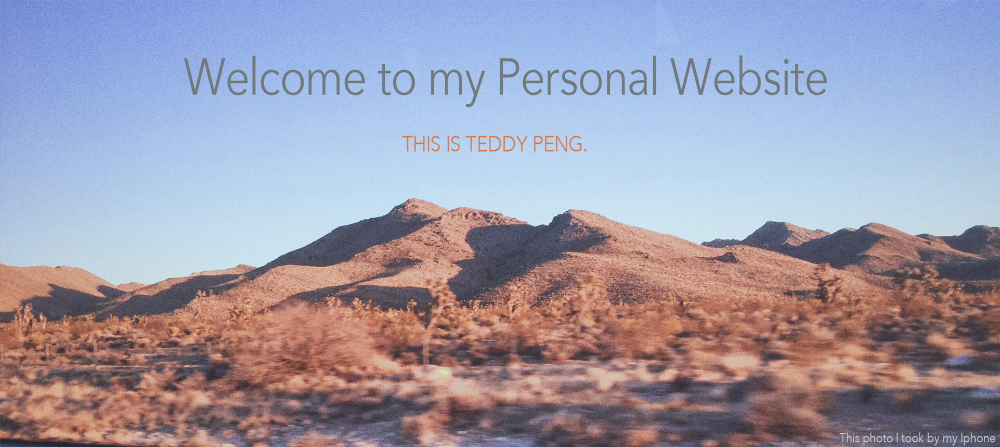
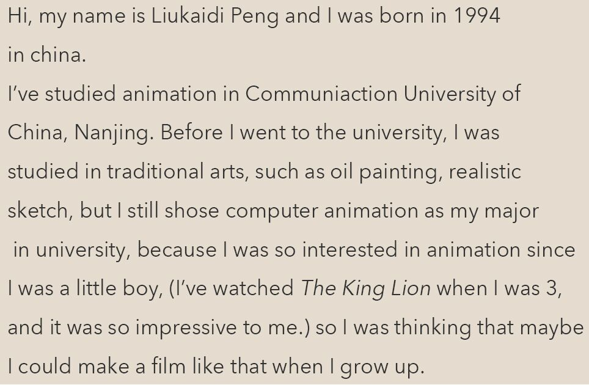

Personal Statement

Sample reel of my animation works
There are some clips of my animation short-films and some 3D animation practices in this video.
There are some clips of my animation short-films and some 3D animation practices in this video.